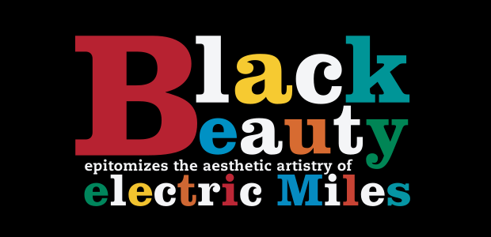

Work
Professional Web Typography
Wrote, designed, and published a web-based book as a graduate independent study (Practices in Graphic Design).
Vietjazz

Vietjazz is a recording company I created for a branding class. The concept was to connect Vietnamese ballad with jazz. I designed the logo, stationery and applications. I also developed a responsive web site for the brand guidelines.
Sketches of Miles
Created a tablet app prototype for my graduate course on Professional Design Practices.
Unitea

Unitea is a fictitious tea company I developed for the final project of my graduate design seminar. The goal was to build a brand with a unique story.